Über mich
Hallo! Ich bin Imad Chatila, 1984 im Libanon geboren und seit 1988 in der Schweiz zu Hause.
Meine Werte
Zuverlässigkeit und Organisation sind für mich selbstverständlich. Ich erledige Aufgaben termingerecht und strukturiert. Neue Technologien und Programmierkonzepte wecken meine Neugier und motivieren mich, ständig dazuzulernen. Durch meine langjährige Erfahrung im Detailhandel weiss ich ausserdem, wie wichtig es ist, auf die Bedürfnisse von Anwendern einzugehen. Kundenorientierung ist für mich nicht nur ein Schlagwort, sondern gelebte Praxis.
Meine Ausbildung
Seit September 2024 absolviere ich an der Benedict-Schule in Zürich eine Ausbildung zum Informatiker EFZ mit der Fachrichtung Applikationsentwicklung. Im Rahmen des HTML- und CSS-Moduls habe ich diese persönliche Website erstellt – mein Einstieg in die Webentwicklung. Zuvor haben wir bereits andere Projekte in Bereichen wie C++ oder Datenbanken umgesetzt. So konnte ich bereits Grundkenntnisse in C++ und MySQL aufbauen. Zurzeit arbeite ich mit Tools wie Visual Studio Code und Git, die mir helfen, meine Projekte effizient zu strukturieren und zu verwalten.
Projekte & Ausblick
Die Umsetzung dieser Website war mein erstes Projekt im Bereich Webentwicklung im Rahmen des HTML/CSS-Moduls. Parallel dazu erweitere ich mein Wissen durch Online-Kurse und Tutorials. In den kommenden Monaten möchte ich mich intensiv mit JavaScript, responsivem Design und modernen Frameworks beschäftigen, um zunehmend dynamischere und benutzerfreundlichere Anwendungen zu entwickeln.
Ziele
Nach dem EFZ-Abschluss plane ich den Besuch einer höheren Fachschule, um mein Wissen in Softwarearchitektur und modernen Webtechnologien weiter zu vertiefen. Langfristig möchte ich Applikationen entwickeln, die sowohl technisch einwandfrei als auch benutzerfreundlich sind.
Freizeit & Leidenschaft
Wenn ich nicht am Code feile, findest du mich im Fitnessstudio oder beim Musikhören, oft elektronische Musik zur Entspannung oder Inspiration. Ab und zu gönne ich mir eine Auszeit in der Natur, um den Kopf frei zu bekommen und neue Energie zu tanken.
Manchmal schiesse ich auch gerne Fotos, um besondere Augenblicke festzuhalten.
Bilder von mir und anderen Momenten
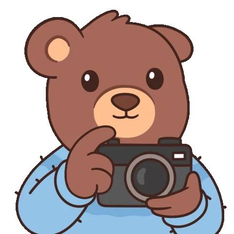
Hier ist eine Fotoserie aus demselben Blickwinkel, die den Wandel der Natur vor meinem Fenster in allen vier Jahreszeiten zeigt.
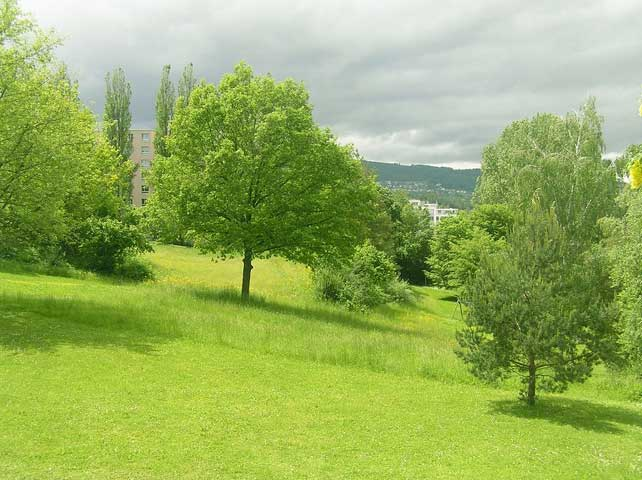
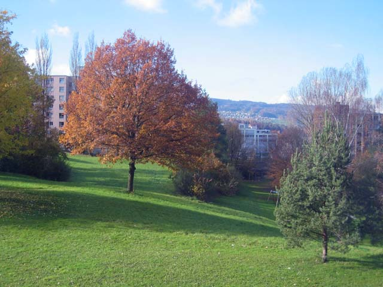
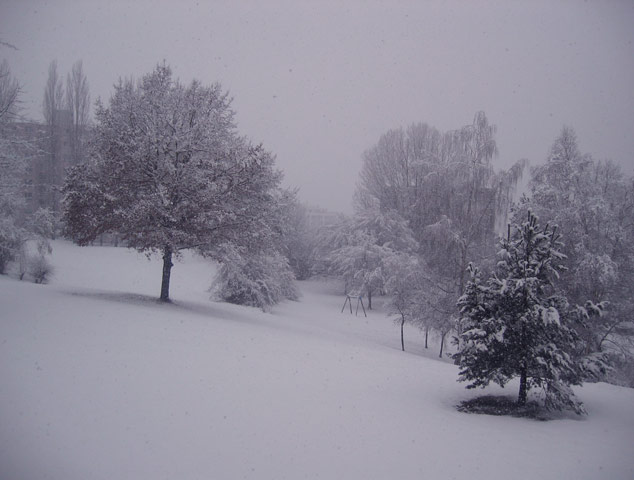
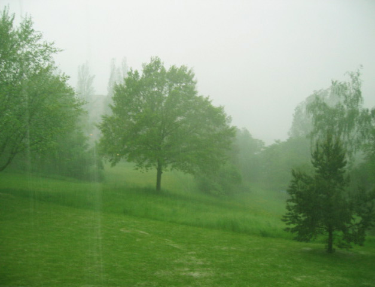
Und hier ein paar persönliche Augenblicke:
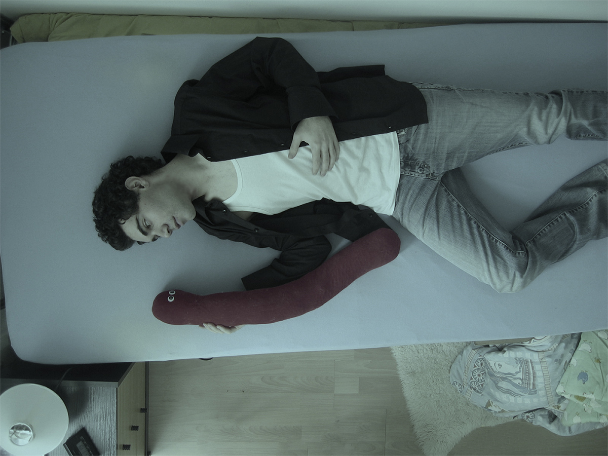
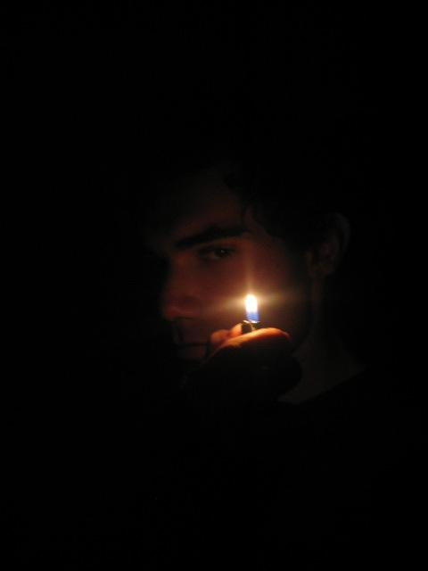
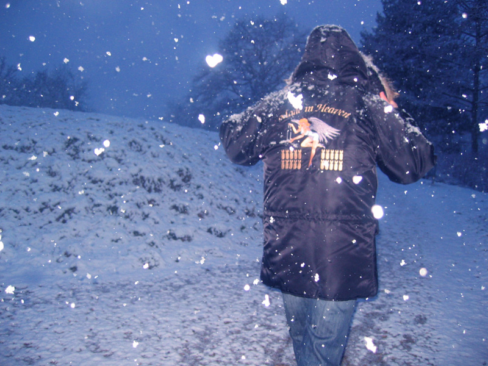
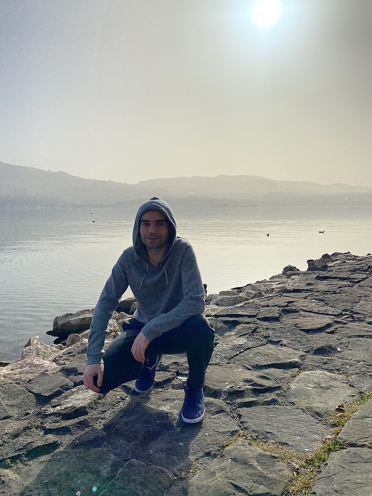
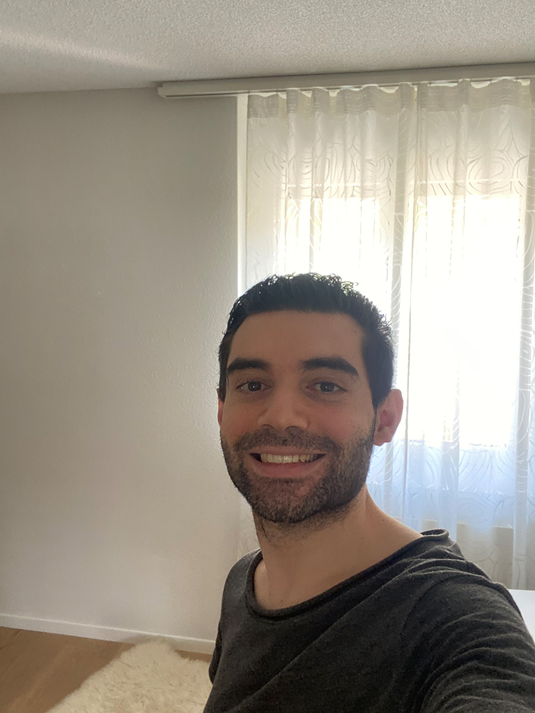
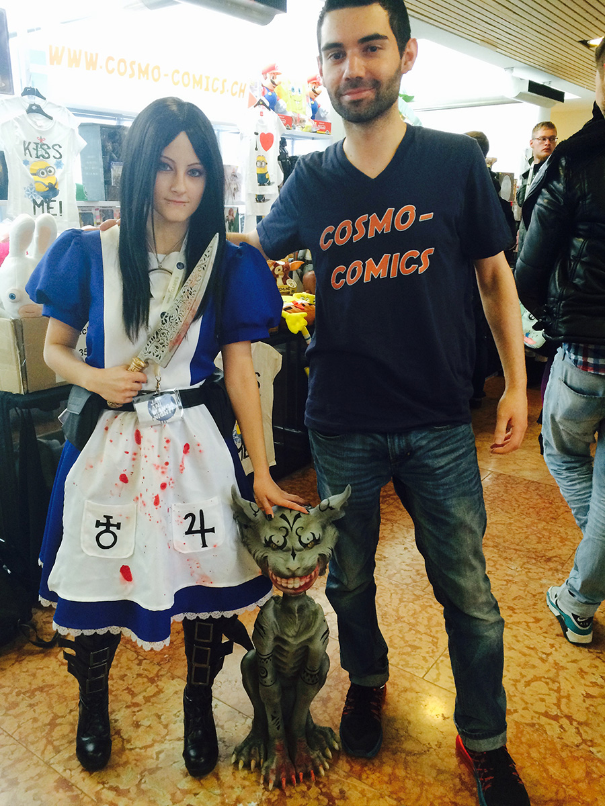
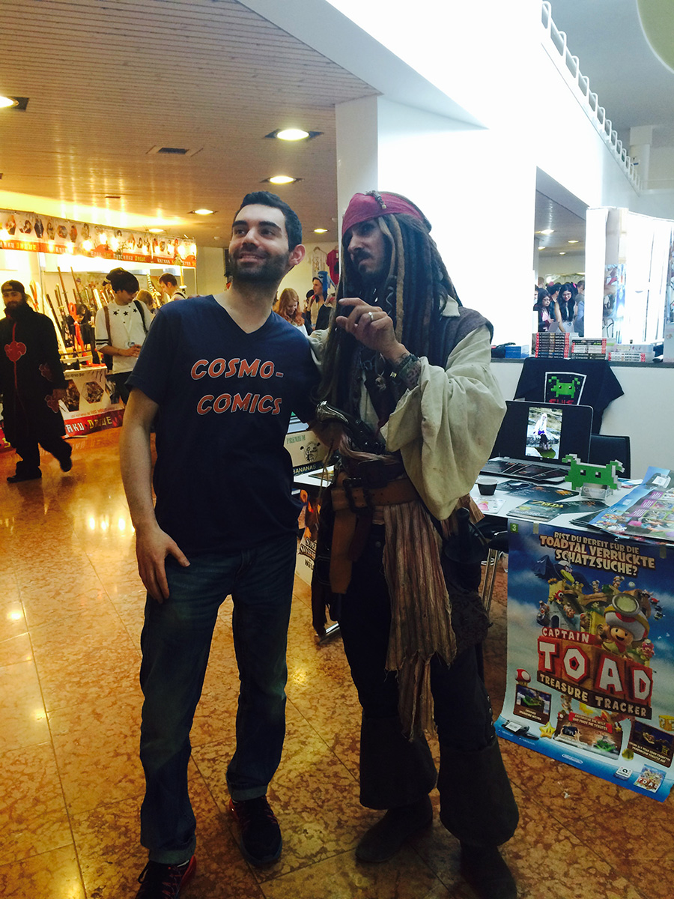
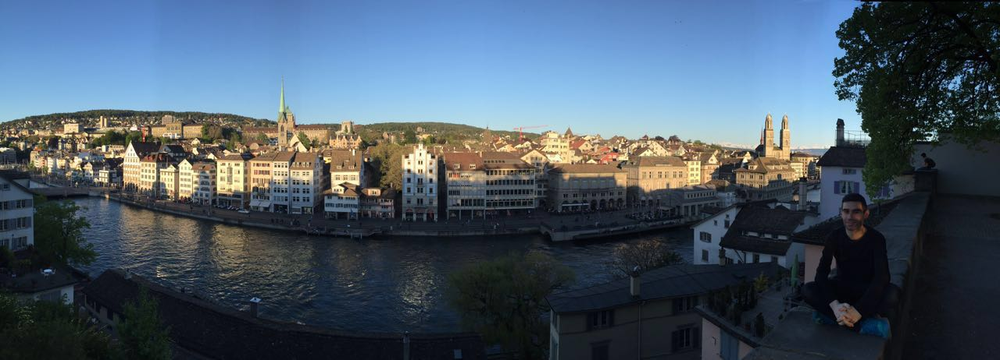
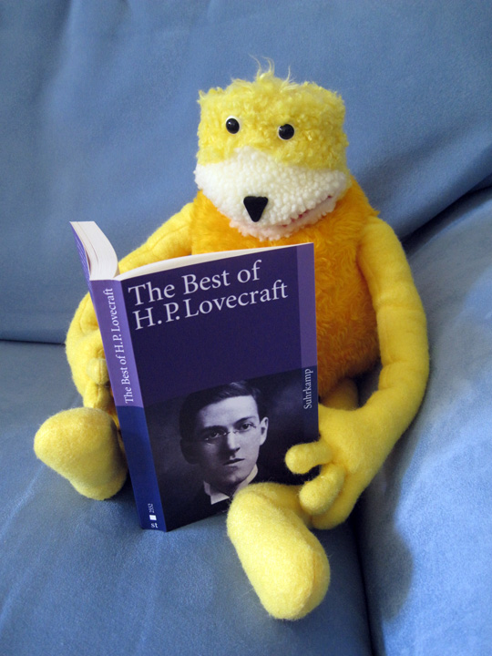
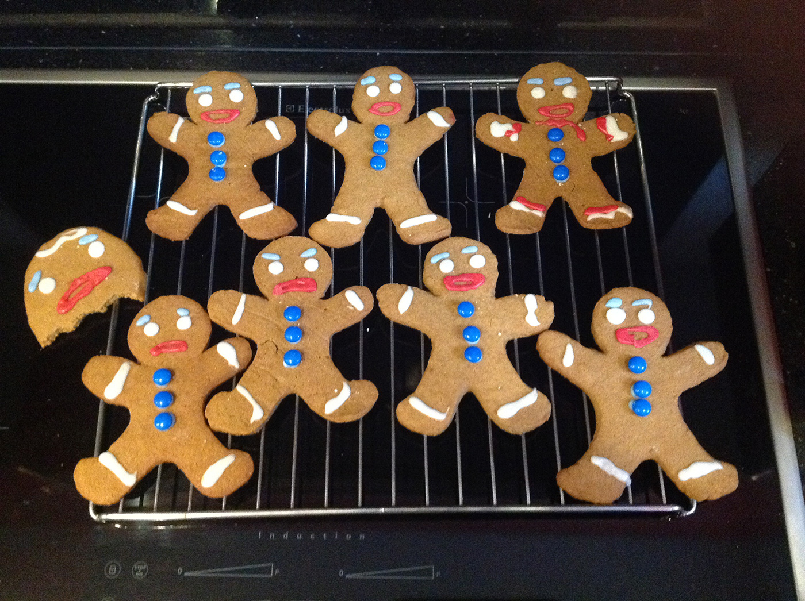
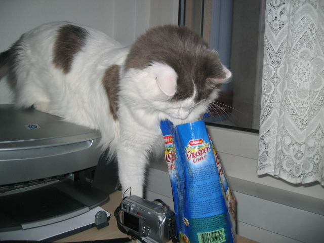
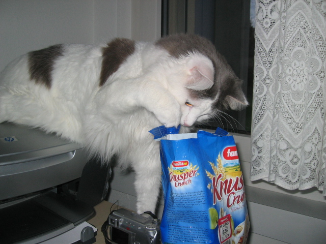
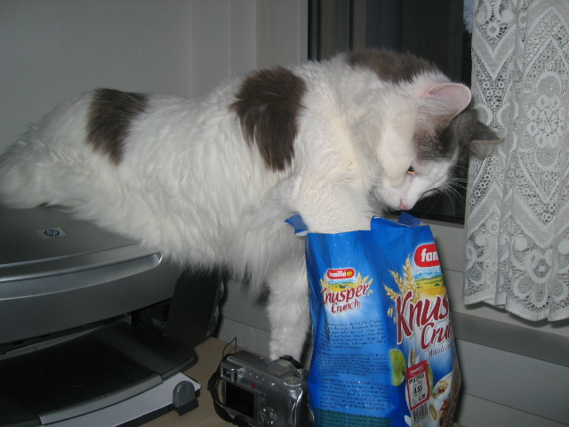
Mein Soundtrack
Dieser Track aus dem Videospiel Silent Hill 3 hilft mir, mich zu entspannen, wenn ich mal einen stressigen Tag hinter mir habe.
Wenn ich Motivation oder neue Energie brauche, sei es beim Coden oder einfach im Alltag, höre ich gerne elektronische Musik wie diesen Track hier: